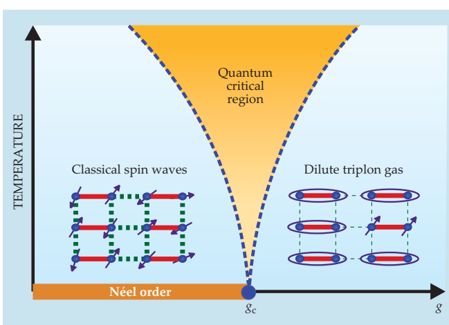

Conceptual review · Source 340
Quantum criticality
A continuous quantum transition at T = 0 can control a broad range of finite-temperature dynamics when thermal fluctuations probe its long correlated scales.
See → explain → test
Build a quantum-critical fan from lengths
Picture 1 / 4
A dimer and an ordered antiferromagnet differ
Look for: Compare singlet partners with coherent Néel arrows.
A product of singlets has entanglement within dimers. It does not have critical correlations between every dimer.
Check the argument in the original: PDF pp. 2–4 ↗
Picture 2 / 4
Tune the ground state
Look for: Follow a model coupling toward gc at T = 0.
A continuous quantum transition changes the ground state through a Hamiltonian parameter, not by heating.
Check the argument in the original: PDF pp. 1–4 ↗
Picture 3 / 4
Temperature introduces another length
Look for: Compare ξ with ℓT at the same detuning.
When ℓT < ξ, the thermal probe samples critical scales before the detuned regime is resolved.
Check the argument in the original: PDF pp. 4–5 ↗
Picture 4 / 4
The observable still matters
Look for: Follow the critical framework into equilibration, spectra and transport.
τeq ∝ ħ/(kBT) is not automatically a nuclear T₁. Metals, microscopic cutoffs and intervening superconductivity add constraints.
Check the argument in the original: PDF pp. 5–7 ↗
Predict before revealing
At fixed detuning away from gc, what happens to ℓT as T falls in the z = 1 illustration?
Choose an answer, then compare the reasoning.
ℓT = ħc/(kBT) grows as T falls. Once it exceeds the detuned correlation length, noncritical character is resolved. The fan is a crossover framework below a microscopic cutoff, not unlimited high-temperature criticality.
Read the answer
It grows and can exceed the finite ξ. ℓT = ħc/(kBT) grows as T falls. Once it exceeds the detuned correlation length, noncritical character is resolved. The fan is a crossover framework below a microscopic cutoff, not unlimited high-temperature criticality.
Read the author figures · evidence and axes

Read the two blue regions by their excitations. Then use ℓT and ξ to explain why the central orange region widens with T.
The dashed curves are crossovers and the top of the sketch is below the exchange cutoff.
Open full source page ↗ · Click the figure to enlargeDetailed argument · from assumptions to conclusions
1 · What temperature does, and what the tuning parameter does
At an ordinary thermal transition the system changes because temperature changes the statistical occupation of states. A quantum phase transition changes the ground state itself as a parameter in the Hamiltonian is varied. The parameter g might encode a field, pressure, coupling ratio or composition. The critical point discussed here is continuous: correlations grow without a finite characteristic length at g = gc. A first-order ground-state transition need not have this structure.
The Ising-chain example contrasts a ferromagnet with spins aligned along the preferred axis and a high-transverse-field quantum paramagnet. The latter can be written as a product of independent field-aligned spins even though expanding it in a different basis produces many configurations. Counting terms in a basis expansion therefore does not measure entanglement. Criticality concerns correlations across scales, not merely a complicated-looking notation.
PDF pp. 1–3 ↗2 · Use the dimer model to understand the excitations
In the dimer antiferromagnet, each spin has one strong partner and weaker links to other pairs. For large g the partners form singlets. A singlet has no preferred spin direction and its two spins are entangled, but a product of isolated singlets has only short-range entanglement. For smaller g the interdimer coupling supports Néel order. In the TlCuCl₃ example increasing pressure effectively decreases this model’s g; g is not pressure itself.
On the singlet side, breaking a dimer produces a triplet excitation, called a triplon. On the ordered side, slow rotations produce spin waves; amplitude oscillations provide another mode discussed in Box 1. These are descriptions of noncritical phases. The quantum-critical region cannot simply be treated as a dilute gas of those same long-lived excitations. Distinguishing ground-state order from excitation content is the first step toward reading a dynamical measurement.
PDF pp. 2–4 ↗3 · Derive the fan as a comparison of lengths
Away from the critical point the correlation length ξ is finite. For the illustrated relativistic, z = 1 model the thermal length is ℓT = ħc/(kBT), with c the spin-wave velocity. If ℓT exceeds ξ, the system reaches its noncritical character before thermal effects dominate. If ℓT is shorter than ξ, temperature samples the correlated critical regime. Since ξ grows near gc, a broader range of g satisfies this second inequality as temperature rises: this creates the fan.
The fan boundaries are crossovers between dynamical regimes, not two additional phase transitions. The sketch is valid below the microscopic exchange energy, kBT ≪ J. Heating without limit does not make the material increasingly quantum critical. Other dynamic exponents change the relation between temporal and spatial scales, so the particular length formula should not be copied unchanged to every metallic critical point.
PDF pp. 4–5 ↗4 · Interpret thermal relaxation and spectral scaling carefully
For the strongly interacting critical systems discussed, the equilibration time can be proportional to ħ/(kBT), with a coefficient determined by the universality class. This is a time for the disturbed many-body system to approach local thermal equilibrium. It is not automatically the nuclear T₁, a quasiparticle lifetime, or the transport relaxation time. Each observable couples to different modes and can have additional conservation-law or disorder constraints.
The dimensionless frequency ħω/(kBT) organizes critical dynamical spectra. A convincing scaling analysis requires the appropriate intensity prefactors, momentum range and temperature window, as well as collapse onto a common function. Box 2 uses a correlation-length derivative in the solvable Ising chain as an illustration; integrability matters when discussing actual thermalization. The article’s viscosity-to-entropy relation likewise concerns particular interacting critical fluids, not a measured viscosity of the supplied cuprate papers.
PDF pp. 4–5 ↗5 · Why metals are harder and superconductivity can hide the point
A metal has a Fermi surface and gapless particle–hole excitations. An order parameter can reorganize that surface while its own dynamics is modified by the electrons. This prevents the insulating dimer analogy from becoming a complete metallic theory. The resistivity maps in Figure 4 motivate quantum-critical interpretations, but a temperature exponent near one is evidence to explain rather than a unique proof of a critical point.
Pairing or nematic order can develop before the bare normal-state critical point is reached. A superconducting dome can therefore shield the low-temperature state one would otherwise want to observe. The examples use several tuning methods: phosphorus substitution in BaFe₂(As₁₋ₓPₓ)₂ is isovalent, while Ce substitution in an electron-doped cuprate changes the carrier balance. Write down what the axis actually changes before comparing diagrams. This 2011 article teaches the framework; it does not settle every later claim of cuprate criticality.
PDF pp. 5–7 ↗Essential equations · symbols, meaning & units
For the z = 1 dimer illustration, lowering T lengthens the thermal scale. Criticality requires proximity to gc and temperatures below the microscopic cutoff.
PDF p. 4 ↗Ceq is dimensionless and depends on the universality class. This relation is not a universal formula for NMR T₁.
PDF pp. 4–5 ↗Explain it in depth
At fixed g away from gc, must the lowest-temperature state be quantum critical?
No. As T falls, ℓT grows beyond the finite ξ and the noncritical regime is reached, unless another order intervenes.
Does a product of singlets have no entanglement?
Each dimer is internally entangled. The product has no entanglement between independent dimers; critical entanglement extends across many scales.
Why should a scaling plot include a temperature window?
Microscopic high-energy scales, detuning, additional phases and disorder can invalidate the critical description outside that window.
Source coverage and version
All seven PDF pages read, including both explanatory boxes; advertisement excluded. Figure 3, Box 2 and Eqs. 4–5 visually checked. The elementary insulating models and metallic examples have different assumptions.